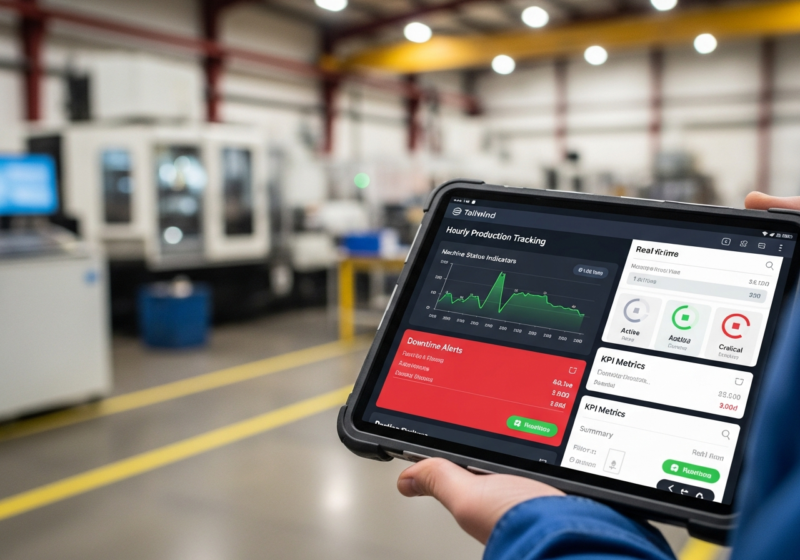
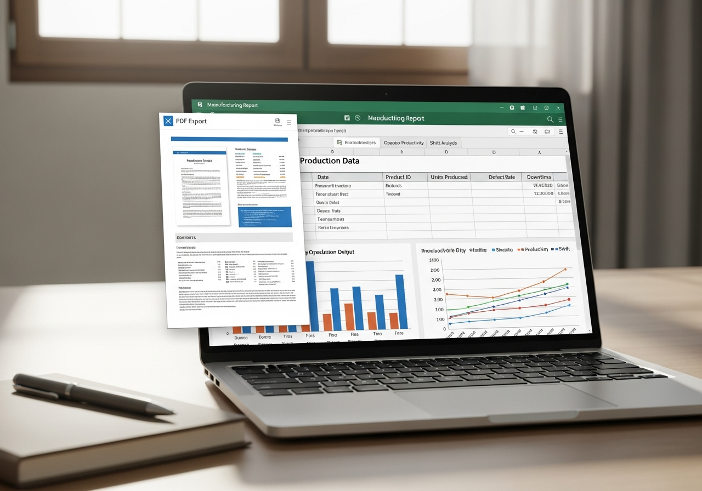
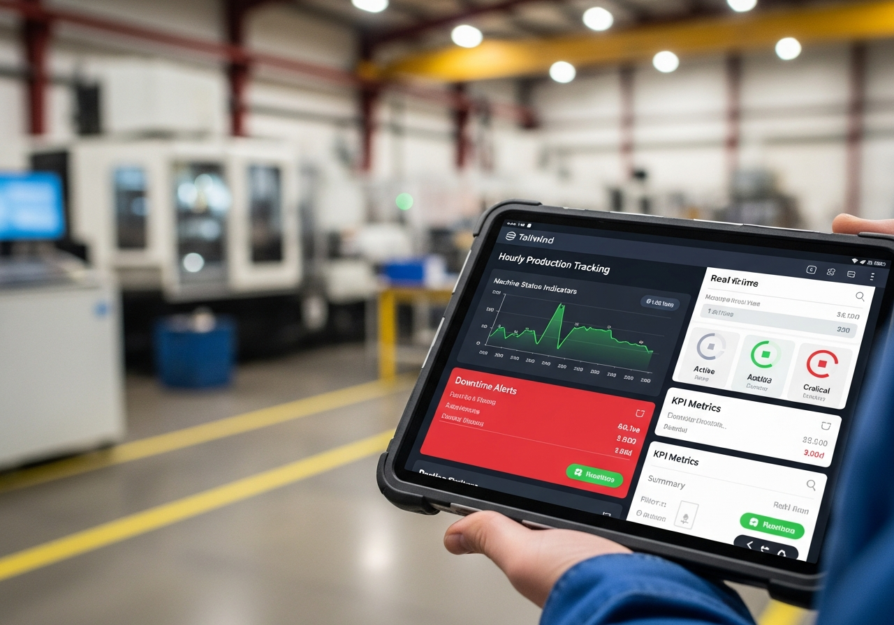
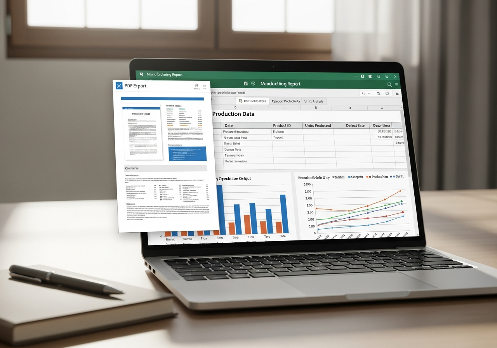

Voltar aos Produtos




Indústria 4.0
ProdLine360 - Sistema de Controle de Produção Industrial
A partir de
R$ 95,00 /mês
R$ 260,00 /trimestral
Descrição do Produto
Sistema completo de controle e monitoramento de produção industrial desenvolvido em Python Flask com SQLite3 puro e interface responsiva mobile-first usando Tailwind CSS. Solução profissional para gestão 360° da sua linha de produção.
Controle total sobre apontamentos de produção, paradas de máquina, OEE (Overall Equipment Effectiveness), relatórios detalhados em PDF/Excel e dashboard interativo com atualização em tempo real. Desenvolvido para ser usado em tablets e celulares no chão de fábrica.
Funcionalidades Principais:
- Sistema de Autenticação com 3 Perfis (Gestor, Encarregado, Operador)
- Apontamento de Produção Hora a Hora
- Controle de Refugo com Motivos
- Registro de Paradas de Máquina
- Dashboard Interativo com KPIs e Gráficos
- Gestão de Ordens de Produção (OPs)
- Cadastro de Máquinas com Presets (Parison, Ciclo, Peso, Teste)
- Cadastro de Linhas de Produção
- Cadastro de Produtos e Usuários
- Relatórios Exportáveis em PDF e Excel
- Ranking de Produtividade (Top 10 Operadores)
- Status de Máquinas em Tempo Real
- Histórico Completo de Paradas
- Interface Mobile-First Otimizada para Touch
- Atualização Automática a Cada 30 Segundos
Relatórios Disponíveis:
- Relatório de Produção por Data
- Relatório de Produção por Máquina
- Relatório de Produção por Operador
- Relatório de Produção por Turno
- Exportação em PDF Formatado (ReportLab)
- Exportação em Excel Formatado (OpenPyxl)
Tecnologias e Diferenciais:
Python Flask
Backend robusto e escalável
SQLite3 Puro
Sem ORM, máxima performance
Mobile-First
Otimizado para tablets e celulares
Chart.js
Gráficos interativos em tempo real
ReportLab
Geração de PDF profissional
OpenPyxl
Excel com fórmulas e formatação
Segurança
Senhas hash SHA-256
Tempo Real
Atualização automática 30s
Solicitar Orçamento
Resposta em até 24 horas
Perguntas Frequentes
O sistema foi projetado para funcionar em rede local (LAN). Quando instalado em um servidor local na empresa, funciona sem necessidade de internet, garantindo estabilidade e independência de conexão externa. Ideal para ambientes industriais.
Gestor: Acesso total ao sistema incluindo cadastros, relatórios e configurações.
Encarregado: Acesso a apontamentos, visualização de dados e alguns cadastros.
Operador: Acesso restrito a apontamento de produção e consultas básicas.
O operador registra a produção hora a hora diretamente no tablet ou celular. Informa a quantidade produzida, quantidade de refugo e motivo (se houver). O sistema também permite registrar paradas de máquina com motivo e descrição detalhada. Tudo em tempo real no dashboard.
Sim! Os relatórios possuem filtros avançados por data, máquina, operador e turno. Você pode exportar em PDF (formatado profissionalmente com ReportLab) ou Excel (com fórmulas e formatação via OpenPyxl). Também podemos criar relatórios customizados específicos para seu negócio.
Sim! O sistema pode ser integrado com ERPs através de APIs REST ou exportação/importação de dados via Excel/CSV. Podemos desenvolver integrações customizadas de acordo com suas necessidades específicas mediante orçamento adicional.